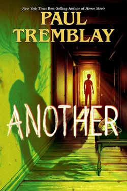

Another - Paul Tremblay
The Good:
- Did not realize it was aimed at middle schoolers until page 100.
- Extremely creepy handdrawn images.
- Even creepier descriptions.
The Bad:
- Has big "how do you do, fellow kids?" energy.
- No subtely, presumable because the author doesn't trust little kids to get his subtext.
I had planned on re-reading Horror Movie by the same author, but I saw that this was released since then. I downloaded it from a piracy website so I didn't know I was way older than the target demographic.